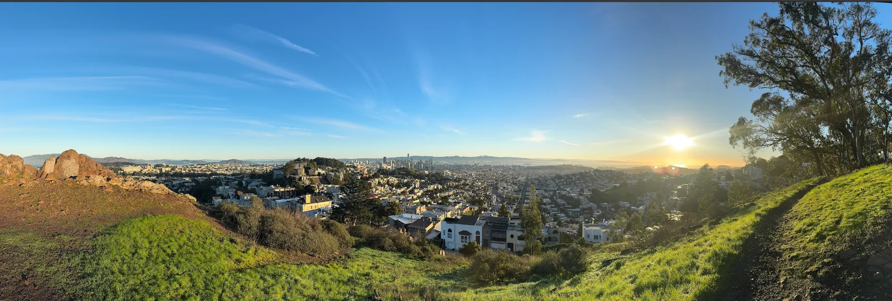
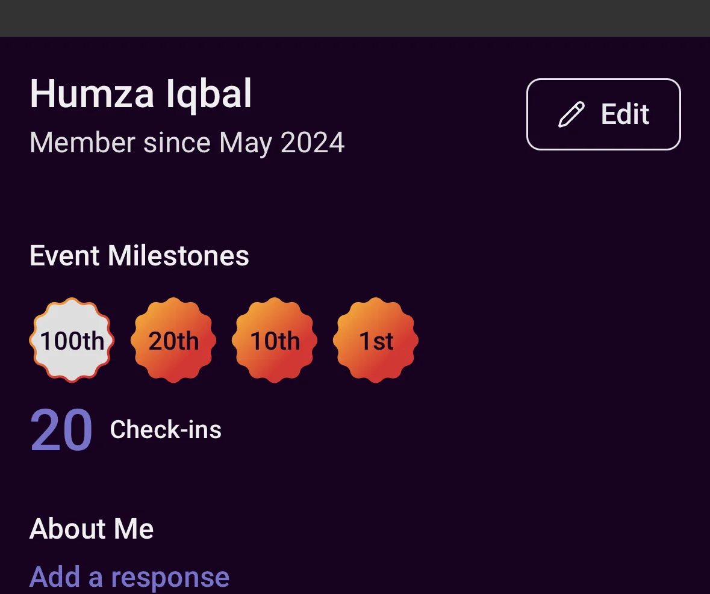
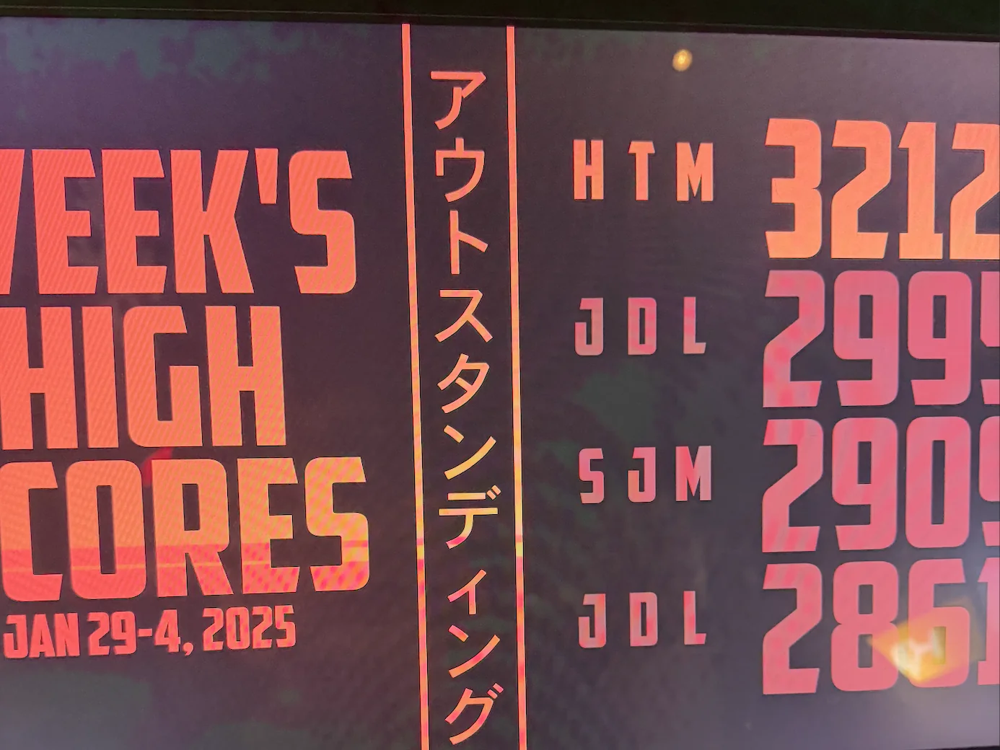
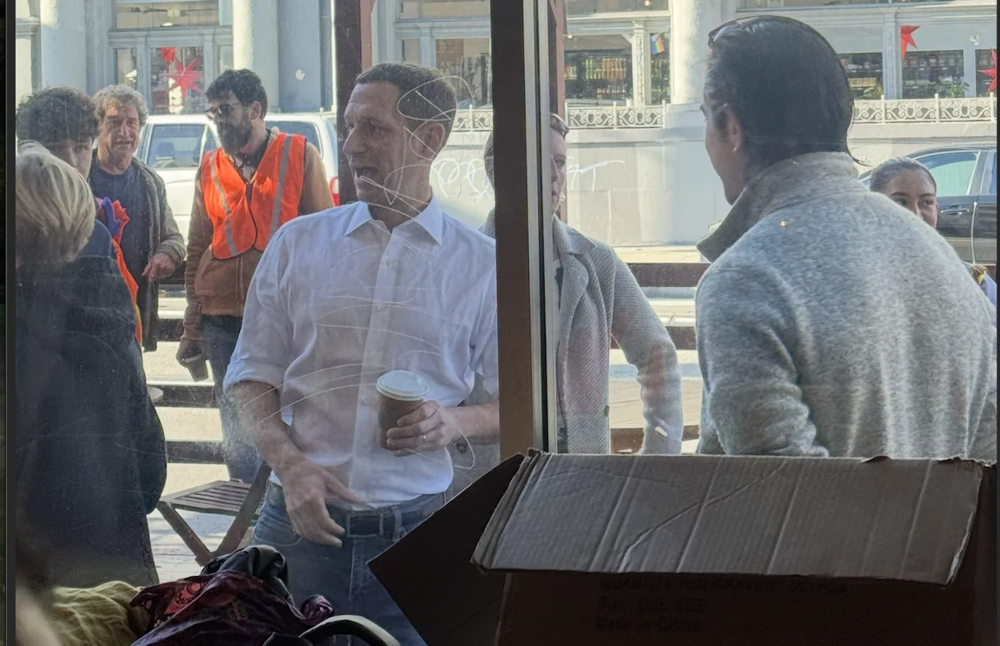
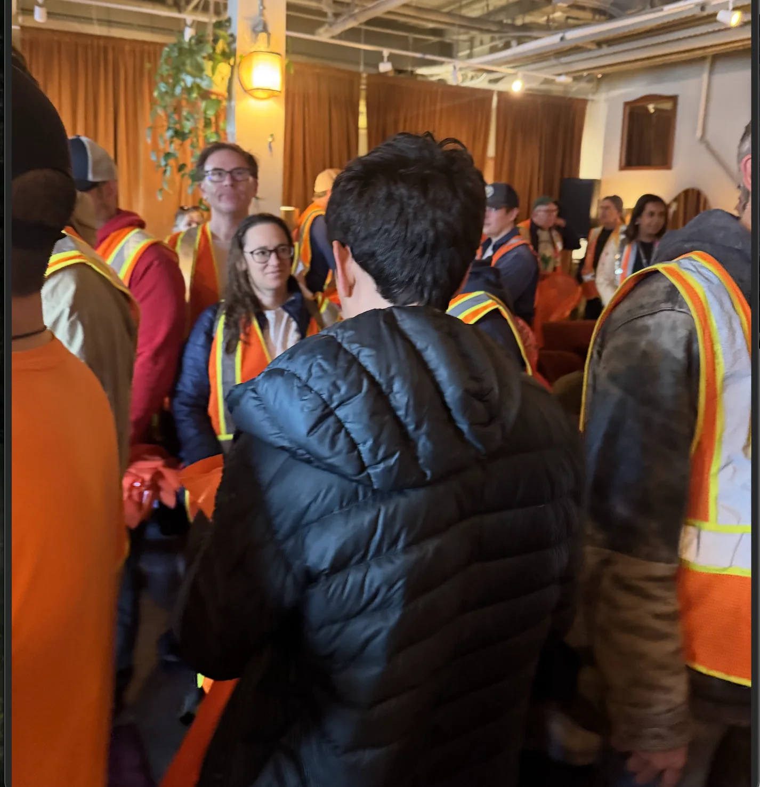

Monday
Today starts off with a nice long walk! The weather is gorgeous today so I go up to Tank Hill, down to Ocean Beach, through Lands End and back to home. One of my favorite weekend morning traditions on a nice morning is to go up to Tank Hill and appreciate the beautiful view and todays did not disappoint

After the long walk I eat lunch. While I’m eating my lunch I happen to make a joke in a groupchat the one guy happened to find particularly funny. So funny in fact that when Siri read the joke out loud while he was lifting weights he almost dropped them. Considering that in comedy we often use phrases like “killed them” or “knock em dead, I consider the fact that I came so close to be high praise indeed :D.
Unfortunately as I would come to learn later I ate too much as I then proceed to do a run with Midnight Runners.
This particular run had us go from Fisherman’s Wharf to Oracle park stopping by all the big Christmas trees in the city along the way. We stopped at 7 Christmas trees in total along this 6.7 mile run. My excess gluttony from earlier led to an upset stomach which definitely did not make the run any easier. That coupled with the long run up Nob hill would definitely make me grade the run a solid “brutal”.
Perhaps the most “brutal” part comes afterwards. Once the run is done we decide to go to Tacobell to get some food, however we sprint there worried everyone would have the same idea. Naturally nobody else comes meaning we wore down our legs more for nothing. Don’t worry it gets better when we sprint from TacoBell to the N line to catch the MUNI home.
On a lighter note today I finally hit my 20th run with Midnight runners. So there is a silver lining to all this!

Tuesday
Our day starts off with brunch over at Kitchen story. If you haven’t been I would highly recommend, the Wagyu beef patties and Avocado are great. Afterwards I go play board games with friends. Ah well. From there I go to a dinner party hosted by one of my run friends which was a great time, the man does know how to host a dinner party! Our next excursion of the night takes us to Detour where I spend my NYE playing arcade games. For those unaware Detour has free arcade games on NYE, highly recommend! The highlight came from when I got the week’s high score in Black Emperor (HTM in the photo below)

Wednesday
Happy new year!! I kicked off the morning rather uncharacteristically lazily by not getting out of bed until 12:30. To be perfectly honest I have no idea why this happened but happened it did. Instead of doing productive stuff I played an old game from my childhood called Stick War. Its essentially a war strategy game where you try to fight opponents with different infantry forces like wizards, giants, spartans, and archers and take out your enemy before they can do the same. It's pretty fun and would recommend playing.
Afterwards I go on a 6 mile run with my runner friends. If you thought the Monday run was rough for me this one was a whole nother magilla. One thing I realized after doing Midnight runners is that the recovery time between each mile proved to be unexpectedly vital for me. When I tried to run 6 miles straight with no break I found that I could do decently for the first mile or two but then my performance degraded hard. My shins were screaming, my knee was aching, and the only thing keeping me going … was pride. It was painful, it was character building, but somehow against all odds … I finish. I’ll admit that being the slowest runner by far along with running far behind the others didn’t feel great. It is important to remember that the Humza who started doing Midnight runners 6 months ago definitely wouldn’t have been able to finish this run at all. In fact the only reason the Humza from the first Midnight runners was even able to do the first mile without walking any of it was because he ran into a Hinge date while on said run and his pride didn’t let him give up. The trendline is positive!
My shins in shambles and my pride plummeting. I do enjoy some nice fried asparagus at Gotts (much better than I thought it would be!!) after the run with my friends which is just what I needed to boost the ol spirits!
After this I went to my friend's sister's birthday dinner at Picaro. If you haven’t been Picaro is great and I highly recommend (not as highly as some though, you know who you are when you’re reading this newsletter). Unfortunately I didn't– realize til I’m back at home that I left my backpack at Picaro.
Thursday
This is my first day back at work in the new year. Things are still slow to start though so not a lot really happens today but I am back. I go home a bit early to catchup with a highschool friend and we play two player Codenames.
For those wondering how such a thing is possible the way it works is as follows: My friend and I picked a word grid and then we each had separate maps and on each turn we would either be the clue giver or the guesser. I would give clues for my friend to guess based on my map or he would give me clues to guess based on his map. It worked surprisingly well! We learn after the fact that there is a variant called Codename Duet thats designed for 2 people but you know I like my version more.
After this I get dinner with my runner friends at Picaro. This is a dual pronged operation that lets us both get my backpack back and go to Picaro which as mentioned above I recommend.
When I get home I’m texting a friend and showing him some previous versions of the newsletter and he sends an interesting comment “It’s interesting to see how I can read like 95% of this in your voice”. I mentioned in the first version of this newsletter that I don’t really have any expectations for this but the fact that he could read so much in my voice probably means I’m being authentic which is the goal here! Cool!
Friday
Not much to note today honestly from an event perspective. Just kinda went to work, did some errands, and chilled at home. Kinda just wanted to relax.
One thing I would like to note is that today I read two essays I wanted to share that really made me stop and think. The first comes from an AI researcher who unfortunately died. I know most reading this newsletter don’t actually work in AI but I still highly recommend as an insightful look into some of the stresses involved in working on Frontier AI. As AI heats up its important to remember that we’re all human and should strive to make a better future together rather than trying to crush the competition.
The second essay talks about finding meaning after accomplishing what should supposedly be the authors magnum opus in life. The line that stuck out the most to me though was this line
“So I’ll just go ahead and explain my current situation for my own selfish purposes. To push myself to be completely (and awkwardly) vulnerable to a blob of nameless strangers over the internet. No expectations of what comes out of it.
While I’m not brave enough to post this to complete strangers this feels a lot like what I’m doing with this newsletter. I don’t really have any expectations for this other than the fact that friends have expressed interest so I resonated with that. The rest of the essay was great too but I could really see myself in those couple of sentences.
Saturday
Our day starts off as always with trash pickup. Readers from the last 2 weeks may recall that our numbers plummeted during the holidays. Thankfully things were on the upswing today when we got 13 people. Definitely not peak performance but better than the last 2 weeks. Upward!
Afterwards I spontaneously hang out with the family who happened to be in the city. From there I play online boardgames with friends. I then proceed to make the very fun albeit not exactly sleep wise decision to video call friends for many hours late at night. I didn’t get much sleep but my heart was very happy!
Sunday
Naturally our day starts off on the Mission streets picking up them trash. But today is a special trash pickup has we have the mayor elect Daniel Lurie here. As part of some initiative to show his support for these he went to 8 different trash pickups this weekend.

This trash pickup is packed with over 300 people! Even just getting inside to get equipment was a herculean undertaking!

The other unfortunate problem is that like with many trash pickups with big shots there are a lot more speeches at the beginning than usual. As someone whose done his fair share of these hearing the same ol speeches doesn’t really do anything for me. Perhaps the first timers there may find them valuable but I just found it a time to read the new manga chapters on my phone. Speaking of, while at the trash pickup I was talking with one of my friends about the newsletter and he said I was like a weekly mangaka which as a huge manga fan myself definitely made that a compliment I’m storing away as one of my favorites. Thanks!
After that though the pickup was great! It was a gorgeous day and I got to go to Dolores Park which was amazing!
A funny random thing that happened was that I was trying to make a friend laugh so I offered to send them a video of me conceding the challenge to eat 6 cans of beans in a sitting which I thought was hilarious. They mentioned I had a strange sense of humor which is most probably true but something about that made me laugh which was great but not what I was there for. Theres no real purpose to this anecdote but I found it interesting.
Following this I have a date over in Golden Gate Park. If I were to give this date a grade I would give it a thumb sideways. The conversation itself proved to be fine although there was no real spark. She seemed like a fun person to talk to and I would have even considered giving it somewhere between a thumbs sideways and thumbs up if it wasn’t for the fact that upon leaving she gave pretty lukewarm signals on meeting up again. She said I should message her but her tone definitely didn’t scream excitement so much as eck out vague indifference. Another small tangent is I always hate how silences feel so ackward when on a date as opposed to normal friends where there can be a bit of silence and it doesn’t feel painful.
From here we go to board game night where many rounds of Chamelon are played and fun is had by all! Then I go home and type up this newsletter!